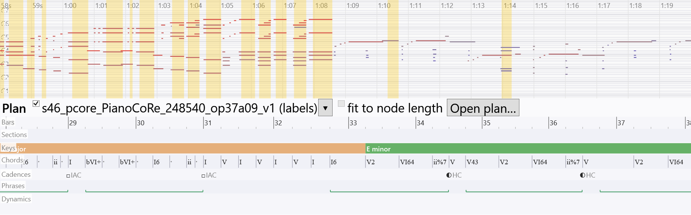

Plan lane
The question: what does an expert (or a plan) say the music does?
The plan lane draws a file of statements about the piece. There are three kinds: a plan (what a piece should do, written before it exists), labels (what an expert says an existing piece does) and recognized (what a program found). The pictures show labels.
 12345
12345- Keys. Each block is a key; its colour belongs to that key everywhere in the program. G major, then E minor at bar 33, through C♯ minor and E♭ minor, B major, and back to G at bar 59.
- Chords. Too dense to read here: a chord too narrow for its name becomes a dot. Zoom in.
- Cadences, by symbol.
- Phrases, as green brackets.
- Sections is empty: this file has none. The Dynamics row is empty too.

1234567- Bar lines with numbers; the small grey ticks are beats.
- The key changes from G major to E minor, in bar 33.
- Roman numerals: the chord relative to the key. V is the dominant, I the tonic; a small number gives the inversion.
- A dot: a chord whose name does not fit. Hover for it.
- □ IAC: an imperfect authentic cadence.
- ◐ HC: a half cadence. The middle part stops on the dominant again and again.
- A phrase: the bracket's feet are its start and end. The stretch from 1:04 to 1:08 belongs to no phrase.
| Looks like | What it is | How to read and use it |
|---|---|---|
| Dark vertical lines with numbers | Bar lines. Every bar when there is room, otherwise every 2nd, 4th, 8th. | |
| Grey diagonal hatching | The bar's timing is below the 0.8 confidence rule: the label may be at the wrong moment there. Do not trust it. | |
| Coloured blocks | Keys or sections. A section that returns takes the colour of the one it brings back. | |
| Grey dot in the chord row | A chord with no room for its numeral. | |
| Green bracket | A phrase. Overlapping phrases are stacked. | |
| Blue curve in the Dynamics row | The intensity arc of a plan, from 0 to 1. | |
| Red dotted vertical line | An event: ▲ climax, 𝄐 fermata, ↩ return point, ‖ pause, rit. | |
| Green tint over whole bars | Two files are ticked (A and B). Full tint: key and chords agree in that bar; pale tint: only one of the two. It describes agreement; it is not a score. |
The cadence symbols
A cadence is the punctuation of music: the place where a phrase stops, and how final the stop is.
| Symbol | Name | Like |
|---|---|---|
| ■ PAC | Perfect authentic cadence: dominant to tonic, melody ending on the tonic note | a full stop |
| □ IAC | Imperfect authentic cadence: dominant to tonic, less final | a semicolon |
| ◐ HC | Half cadence: stops on the dominant, open | a comma or a question |
| ✕ DC | Deceptive cadence: the tonic was promised, something else came | a sentence that turns |
| ↯ EC | Evaded cadence: the arrival is cut off | a sentence interrupted |
| ◇ PC | Plagal cadence: from the subdominant to the tonic | an amen |
In September the only full stop, ■ PAC, is the last bar. Everything before it is a semicolon or a comma.
Read more
- The DCML annotation standard: how the keys, chords, phrases and cadences are written
- DCML's annotated edition of Tchaikovsky's The Seasons, the source of the September labels (CC BY-NC-SA 4.0)
- Open Music Theory: a free textbook; its chapters on harmony and form cover keys, Roman numerals and cadences
- W. Caplin, Classical Form, Oxford 1998 (the chapter on basic formal functions)